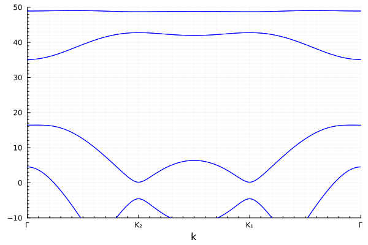
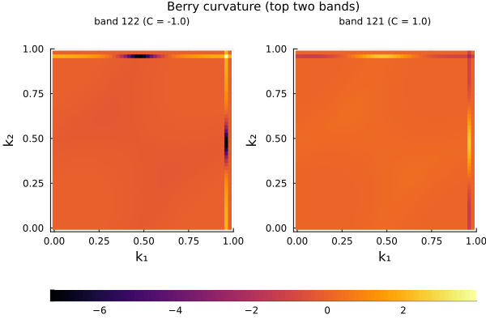
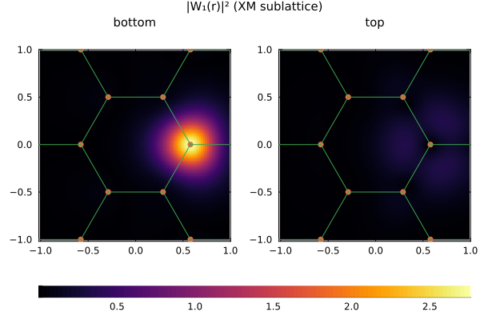
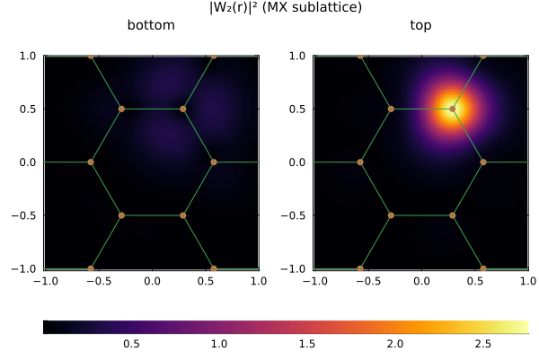
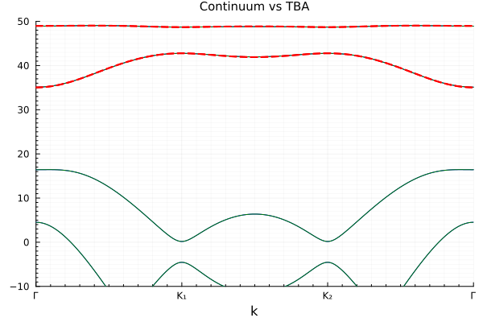
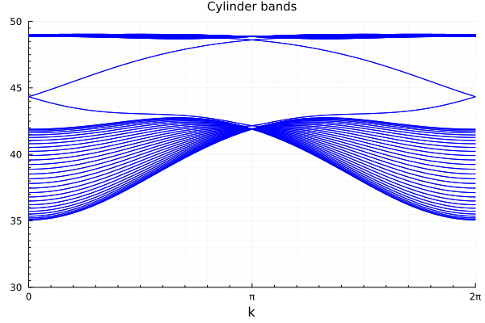
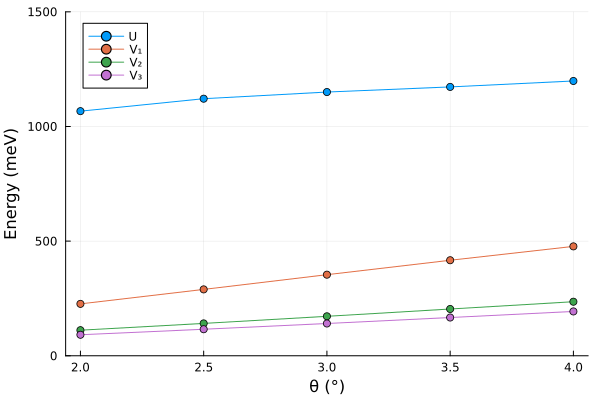

Twisted Homobilayer TMD — Honeycomb Lattice
Following Phys. Rev. Lett. 132, 036501 (2024), twisted bilayer MoTe₂ at $\theta \approx 2.94^\circ$ hosts topologically non-trivial moiré bands. The top two bands carry opposite Chern numbers $C = \pm 1$ and together form an emergent honeycomb lattice with two sublattice sites corresponding to the XM and MX stacking registries.
The continuum model parameters are $a_0 = 3.52$ Å, $m = 0.6\,m_e$, $\theta = 2.94^\circ$, $V = 20.8$ meV, $\psi = 107.7^\circ$, $w = -23.8$ meV. The displacement field is $V_z = 0$ throughout.
Continuum Model
using MoireSuperlattices
using Plots
using QuantumLattices
using TightBindingApproximation
parameters = (a₀=3.52, m=0.6, θ=2.94, Vᶻ=0.0, μ=0.0, V=20.8, ψ=107.7, w=-23.8)
MoTe₂ = Algorithm(:MoTe₂, BLTMD(values(parameters)...; truncation=4), parameters)
recipls = reciprocals(MoTe₂.frontend.reciprocallattice)
bands₁ = MoTe₂(:EB, EnergyBands(ReciprocalPath(recipls, hexagon"Γ-K₁-K₂-Γ", length=100)))
bands₂ = MoTe₂(:EB, EnergyBands(ReciprocalPath(recipls, hexagon"Γ-K₂-K₁-Γ", length=100)))
plt = plot()
plot!(plt, bands₁, ylims=(-10.0, 50.0), color="blue", title="")
plot!(plt, bands₂, ylims=(-10.0, 50.0), color="blue", title="")
The top two bands are the ones of interest. They are separated from lower bands by a gap and carry the topological character.
Topology
We compute the Berry curvature of the top two bands (indices $N$ and $N-1$, where $N$ is the total number of bands) on a 48×48 k-mesh.
N = dimension(MoTe₂)
berry = MoTe₂(:BC, BerryCurvature(BrillouinZone(recipls, 48), [N, N-1]))
plot(berry, plot_title="Berry curvature (top two bands)")
The two bands carry opposite Chern numbers $C = \pm 1$, characteristic of a topological honeycomb lattice model.
Wannier Construction
The two topological bands together form an emergent honeycomb lattice (MoireHoneycomb) with two sublattice sites representing XM and MX stacking registries. Following Nat. Commun. 12, 6730 (2021) and Natl. Sci. Rev. 13, nwaf354 (2026), the Wannier construction proceeds in two steps:
SU(2) rotation: At each $\mathbf{k}$-point, we diagonalize the top-layer projector $P_{\mu\nu} = \sum_{\mathbf{G}} \langle\psi_\mu| P_{\rm top} |\psi_\nu\rangle$ to maximize layer polarization. This separates the two Wannier orbitals into a bottom-layer-dominant state ($W_1$, centered at XM) and a top-layer-dominant state ($W_2$, centered at MX).
U(1) phase fix: The residual phase freedom is fixed by requiring $W_1(\mathbf{r}_{\rm XM})$ to be real and positive for the bottom-layer component, and $W_2(\mathbf{r}_{\rm MX})$ to be real and positive for the top-layer component.
lattice = MoireHoneycomb()
wannier = MoireWannier(MoTe₂, lattice; nk=18)
# Real-space |W(r)|² on a 2×2 supercell
realzone = RealZone([[1.0, 0.0], [0.0, 1.0]], -1=>1, -1=>1)
plot(realzone, wannier, 1; plot_title="|W₁(r)|² (XM sublattice)")
plot(realzone, wannier, 2; plot_title="|W₂(r)|² (MX sublattice)")
The two Wannier orbitals are centered at the XM and MX sites respectively, confirming the honeycomb effective lattice picture.
Hopping Integrals and Tight-Binding Model
The 2×2 hopping matrix $t_{mn}(\mathbf{R})$ contains both spin-independent hopping (real part) and spin-orbital coupling (imaginary part). The terms function automatically separates these into Hopping terms with SublatticeAmplitude and SOC Hopping terms with SpinOrbitalCouplingAmplitude, using translation equivalence (isparallel) to match bonds.
hopping = HoppingIntegral(wannier)
tba_terms = terms(hopping; order=6, atol=1e-3, rtol=1e-3)The generated terms are:
for term in tba_terms
println("$(id(term)) = $(round(value(term); digits=4))")
endt₁ = -1.2082 + 0.0im
λ₁ = -2.0927 + 0.0im
t₂ = -0.4071 + 0.0im
λ₂ = -0.6006 + 0.0im
t₃ = 0.1443 + 0.0im
λ₃ = 0.25 + 0.0im
t₄ = -0.0482 + 0.0im
λ₄ = -0.0835 + 0.0im
t₅ = -0.0152 + 0.0im
λ₅ = 0.0 + 0.0im
t₆ = -0.0069 + 0.0im
λ₆ = -0.0311 + 0.0im
μ = 44.5829 + 0.0imHere, $t_k$ terms represent spin-independent hopping and $\lambda_k$ terms represent spin-orbital coupling, both classified by neighbor order $k$.
We construct the tight-binding model and compare with the continuum model.
hilbert = Hilbert(Fock{:f}(1, 2), length(lattice))
tba = Algorithm(:tba, TBA(lattice, hilbert, tba_terms))
bands_tba = tba(:EB, EnergyBands(ReciprocalPath(recipls, hexagon"Γ-K₁-K₂-Γ", length=100)))
plt = plot()
plot!(plt, bands₁, ylims=(-10.0, 50.0), color="blue")
plot!(plt, bands₂, ylims=(-10.0, 50.0), color="green")
plot!(plt, bands_tba, ylims=(-10.0, 50.0), ls=:dash, lw=2, color="red", title="Continuum vs TBA")
The tight-binding model (dashed red) reproduces the continuum model bands (solid blue/green) including the topological character encoded in the SOC terms.
Edge States with Tight-Binding Model
A key advantage of the terms-generated tba_terms is that they are defined purely by bond amplitudes on the primitive lattice — they carry no dependence on the global lattice geometry or boundary conditions. The same set of terms can be directly applied to a cylinder geometry to study topological edge states, without any modification whatsoever.
We construct a cylinder by repeating the honeycomb lattice $N$ times along the $\mathbf{a}_1$ direction (periodic) and $M$ times along $\mathbf{a}_2$ (open boundary):
# Cylinder: periodic along a₁, open along a₂
N, M = 1, 30
cylinder_lattice = Lattice(lattice, (N, M), ('P', 'O'))
cylinder_hilbert = Hilbert(Fock{:f}(1, 2), length(cylinder_lattice))
# The same tba_terms apply without any change
cylinder_tba = Algorithm(:cylinder, TBA(cylinder_lattice, cylinder_hilbert, tba_terms))
# Energy bands along the 1D periodic direction
cylinder_recipls = reciprocals(cylinder_lattice)
cylinder_bands = cylinder_tba(:EB, EnergyBands(ReciprocalPath(cylinder_recipls, 0.0, 0.5, 1.0; labels=("0", "π", "2π"), length=200)))
plot(cylinder_bands; ylims=(30.0, 50.0), color="blue", legend=false, title="Cylinder bands")
The resulting band structure reveals pairs of in-gap helical modes crossing the bulk gap — these are the topological edge states guaranteed by the bulk-boundary correspondence: the nonzero (spin) Chern numbers $C = \pm 1$ of the bulk bands imply one helical edge mode per boundary. The edge states traverse the gap, connecting the valence and conduction bulk continua.
Coulomb Interaction and Twist-Angle Dependence
We study the twist-angle dependence of the projected Coulomb interaction. The unscreened 2D Coulomb potential $V(q) = 2\pi e^2 / (\epsilon |q|)$ is used with $\epsilon = 1$ (free-standing, via BareCoulomb), and $V_z = 0$ is fixed throughout.
θs = [2.0, 2.5, 3.0, 3.5, 4.0]
Us, V₁s, V₂s, V₃s = Float64[], Float64[], Float64[], Float64[]
for θ in θs
update!(MoTe₂; θ=θ)
wannier = MoireWannier(MoTe₂, MoireHoneycomb(); nk=18)
coulomb = CoulombIntegral(wannier)
coulomb_terms = terms(coulomb, BareCoulomb(1.0); order=4, atol=1e-3, rtol=1e-3)
# coulomb_terms: Hubbard term U followed by Coulomb terms (V₁, V₂, ...)
push!(Us, value(coulomb_terms[1]))
push!(V₁s, value(coulomb_terms[2]))
push!(V₂s, value(coulomb_terms[3]))
push!(V₃s, value(coulomb_terms[4]))
end
plt = plot(; ylims=(0, 1500), xlabel="θ (°)", ylabel="Energy (meV)")
plot!(plt, θs, Us; marker=:circle, label="U")
plot!(plt, θs, V₁s; marker=:circle, label="V₁")
plot!(plt, θs, V₂s; marker=:circle, label="V₂")
plot!(plt, θs, V₃s; marker=:circle, label="V₃")
Due to the absence of $V^z$, the two onsite Hubbard terms at the XM and MX sublattices host equal values. All interaction strengths increase with increasing twist angle as the moiré lattice constant decreases.